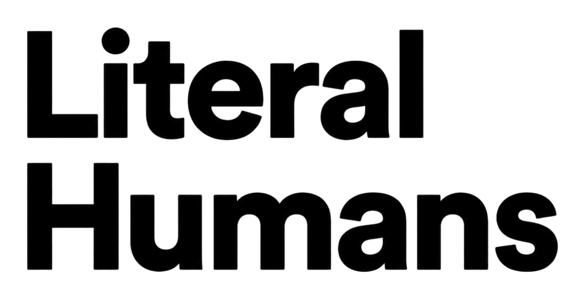
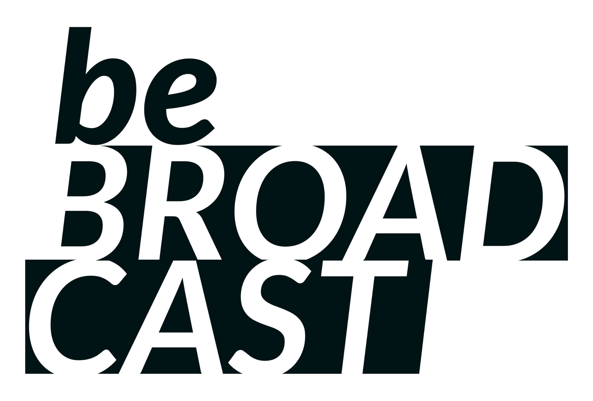
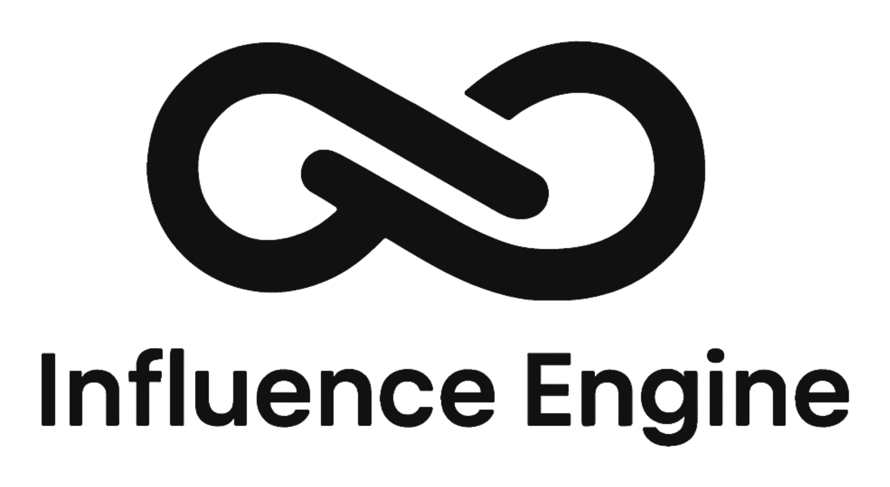
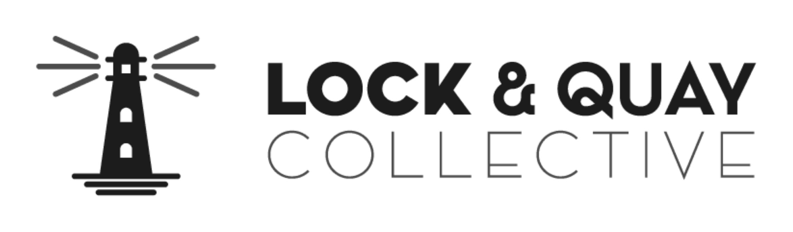

Book your AuditIf you run a marketing or creative agency doing £50k to £500k+ a month, this is how you turn it into an asset-grade business: one that produces predictable profit, runs without you, and could sell for a premium even if you never do.
For six years we've built the financial layer underneath scaling agencies, and taken two of them all the way to a clean exit. Across 50-plus P&Ls, the agencies that became genuinely valuable all looked the same on the inside.




I've sat with founders billing £2m a year who assumed they'd built something they could one day sell. Then we run the numbers a buyer would run, and the gap is brutal. Not because the work is bad, the work is usually excellent. It's because the "business" is really just them, working very hard, with a logo on top.
A buyer doesn't pay for last year's revenue. They pay for next year's profit, the profit they're confident will still be there once you, the founder, have gone. If that profit lives in your head, your relationships, and your inbox, there's nothing for them to buy. You haven't built an asset. You've built a job with a good salary and no exit.
An asset-grade agency throws off predictable profit a stranger could own without you in the chair. That is also, not by coincidence, the version that finally gives you your life back.
Whether or not you ever sell, that is the bar worth building to. So let's look at what quietly pulls an agency away from it.
When a deal falls apart, or comes in at a humiliating multiple, it's rarely a surprise to us. It traces back to one of three structural faults, and most agencies have all three. The first one you can see in the org chart.
Fault one is owner-dependence. Sales, the biggest relationships, the final quality call, they all still run through you. Fault two is invisible margins. You know the bank balance, but not your true net margin, and not which clients actually make money once you count the time they quietly eat. Fault three is fragile revenue. Lumpy project work that resets to zero every quarter, or a single client who'd take a third of the agency with them if they walked.
Revenue hides all three. You can be growing fast and becoming less valuable at the same time, and never feel it until you try to leave.
Almost every founder I meet has the same instinct: the route to a bigger, more valuable agency is more revenue. So they chase the next hire, the next client, the next service line. And they do get bigger. They just don't get more valuable.
Picture two agencies on the same £3m of revenue. The first is the founder running flat out: project work, messy margins, books a year behind. The second runs without its founder, on recurring revenue, with clean numbers and a net margin everyone in the room can name. The first might fetch two to three times profit, if it sells at all. The second can command far more, on a bigger profit number to begin with. Same revenue. Wildly different outcomes. The difference isn't growth. It's risk.
More revenue on the same shaky foundations doesn't build an asset. It just builds a bigger job.
The Agency Profit Audit shows you exactly where your margin, and your valuation, is leaking. 45 minutes, no pitch.
Building an asset-grade agency is mostly the work of making yourself progressively less necessary, on purpose. To a lot of founders that sounds like a threat. In practice it's the only thing that ever hands them back their time and their valuation at once.
The mechanics are unglamorous, and that's the point. A monthly P&L you actually read. Profitability tracked per client and per pod. Hiring tied to a capacity plan instead of a stressful week. None of it is heroic. All of it is what a buyer, and a calmer version of you, needs in order to trust the numbers.
This is the part most agencies are missing, and it's the part we build. We think about agency finance in three layers. Most agencies only ever build the first one, and wonder why growth doesn't feel like progress.
Backward-looking bookkeeping. Numbers that are months old. Margin a mystery until the year-end accounts land, by which point the year is gone.
Real-time, client-level, forward-looking financials. You know your true margin this week, not next year, and you can act while it still matters.
Here's why now. None of this used to be within reach of an agency under a few million in revenue. It meant a full-time finance hire you couldn't justify. That's the part that changed. The right systems plus a fractional CFO layer now put the same financial infrastructure the big players run within reach of a £50k-a-month agency.
In a 45-minute Profit Audit we'll map the three layers against your business and show you which gaps are costing you profit and value right now.
Every founder I've watched build a genuinely valuable agency went through the same change, and it's more identity than process. They stopped measuring themselves by how indispensable they were, and started measuring by how well the business ran without them.
Value lives in you. Growth means more of your time and energy. Time off is a risk the business can't absorb. What you've built is a job you can't quit.
Value lives in the business. Growth means better systems and margins. Time off is a test the business passes. What you've built is an asset you choose to keep, or sell.
Build it like you'll sell it, even if you never do. The discipline that makes an agency sellable is the same discipline that makes its founder free.
You don't have to want an exit for any of this to be worth it. An asset-grade agency pays you better, stresses you less, and hands you the one thing a job never can: the choice. That's the whole game.
Five questions, about two minutes. No email required, you'll see your result straight away.
The Agency Profit Audit is a free 45-minute session. No pitch. You'll leave with a clear read on your margins, your biggest profit leaks, and how close your agency really is to asset-grade.
Book your Agency Profit AuditTrusted by 100+ scaling agencies. No card, no commitment.